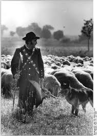

幾乎所有的狗與灰狼的親緣關係都是由於混種而造成的。然而，一些北極品種也顯示出與現在已經滅絕的北亞的泰米爾狼混種，有基因相近關係，例如：西伯利亞哈士奇和格陵蘭犬（這在歷史上與北極人口也有關），沙皮犬和芬蘭狐狸犬在較小程度上也是如此。格陵蘭狗的最佳曲線表示3.5％共享資料的最佳擬合; 然而，在1.4％和27.3％之間的祖先比例與這些數據是一致的，並且顯示了在這四個高緯度品種中，泰米爾狼和祖先之間的混種。
哈士奇這類的狗原本是由北極土著民族飼養的地方品種。近代的這些地方品種已經被選擇性地培育並登記在各種犬舍中，如現代純種犬種，包括西伯利亞雪橇犬和哈士奇拉布拉多犬。薩哈林雪橇犬與日本斯皮茨和秋田犬有關係。馬更些河哈士奇是不同的亞種，生活在北極地區和亞北極區的阿拉斯加和加拿大。